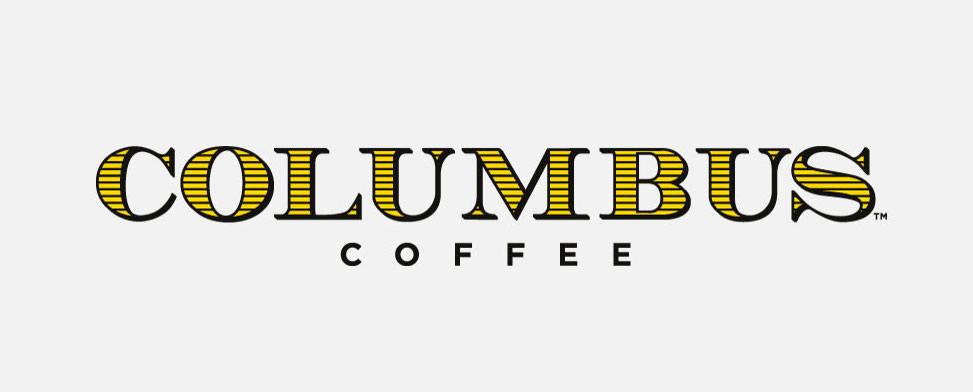
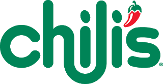

Welcome to Buffalo Wings Airport!
Here at BWA, we aim to make your trip as enjoyable and worry free as possible. While you wait, please enjoy our beautiful terminals and gorgeous views. We also have a mouth-wateringly good food court, featuring restaurants like Eleven Madison Park Express and Ruth's Chris Steakhouse, as well as an industry-leading shopping center, which includes a Polo Ralph Lauren and Supreme. Have a great flight, and enjoy your trip!
This elevated dining steakhouse is home to top-of-the-line, perfectly cooked steakhouse and other foods. For anyone celebrating, traveling, or just has a couple extra hours, this is a great choice.

This quick-service version of the famous Michelin starred restaurant in New York City brings the classiness and delicious food to a wider audience, with faster meals andbigger portions. Do yourself a favor and try it out!

The cream of the crop for fast food joints, Chick-fil-A offers consistent, fast, and friendly service to anyone. Enjoy a quick bite to eat and grab a limited-time frosted key lime!
This high-end coffee joint offers some of the finest roasted and best brewed coffee beans in the world. Grab a cappucino, a fresh pastry, and get going!
This classic American restaurant serves everything you're craving. The tex-mex style and well-priced menu make Chili's a great choice for anyone.

A fantastic option for the ravished on the run, Qdoba's specialty is quick-service
Mexican food, with huge burritos and delicious salsa. Head here and enjoy!

This quick fast-casual deli and bakery is home to everyone. Their inviting atmosphere and fresh-baked breads make this a great choice for anyone at any time.